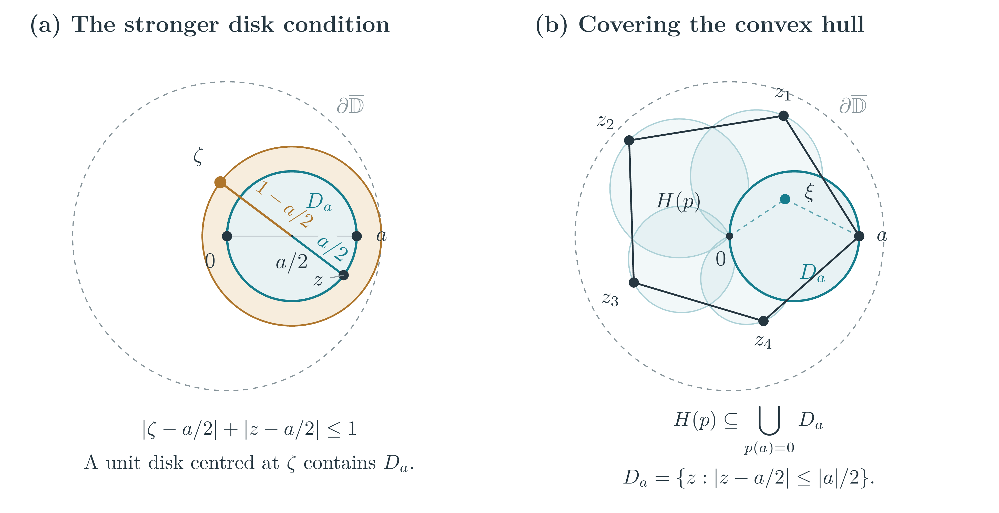
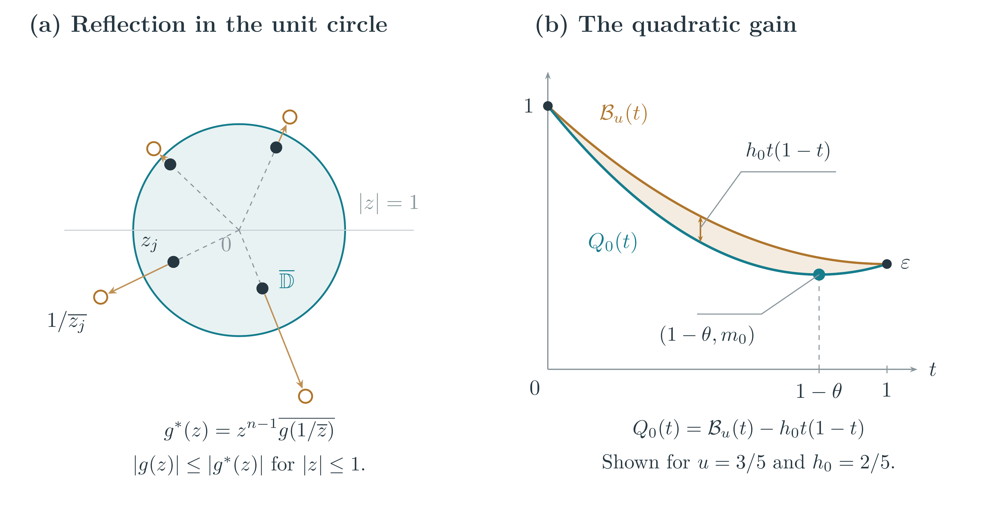

The full proof of Schmeisser's conjecture for all degrees, with optimality and the interval certificates, is formalized in Lean 4 with Mathlib; Codex generated it.
Abstract
In 1977, Schmeisser proposed a strengthening of Sendov's conjecture: if all zeros of a polynomial $p$ of degree $n\ge2$ lie in the closed unit disk, then for every point $ξ$ in the convex hull of the zeros of $p$, there exists a critical point $ζ$ of $p$ such that $ |ξ-ζ|\le 1.$ We prove this conjecture in every degree. The proof combines a covering of the convex hull by diameter disks, inequalities for reflected polynomials, and quantitative estimates for centred products, supplemented by rigorous computer-assisted verification in a finite range of degrees.The Lean 4 formalization of the main results are also provided.
Problem
Schmeisser's 1977 conjecture strengthens Sendov's conjecture. If all zeros of a degree-n polynomial lie in the closed unit disk, then every point of the convex hull of the zeros is within distance 1 of some critical point. Before this work it was known only in special cases.
Approach
The convex hull is covered by diameter disks of the zeros. This reduces the problem to a weighted covering criterion, a positive semidefiniteness condition. If that condition fails, two necessary integral inequalities follow, derived using reflected polynomials and centred-product error bounds. The inequalities are ruled out analytically for n ≥ 6001 and by rigorous interval verification for 4 ≤ n ≤ 6000. The whole argument is formalized in Lean 4 with Mathlib, the formalization was generated with OpenAI's Codex, and Lean's kernel checks the interval certificates.

Figure 1. The geometric reduction. (a) For 0<a<1 , the condition |\zeta-a/2|\leq 1-a/2 ensures that the unit disk centred at \zeta contains D_{a} ; see Remark 1.2 . (b) The diameter disks associated with the zeros of p cover H(p) , as in Lemma 2.1 . The darker disk is D_{a} , and \xi\in H(p)\cap D_{a} .

Figure 3. Reflection and the quadratic comparison. (a) Each nonzero zero z_{j} of g(z)=p(z)/(z-a) is reflected to the zero 1/\overline{z_{j}} of g^{*} . Filled and open circles represent the zeros of g and g^{*} , respectively. (b) Subtracting h_{0}t(1-t) from \mathcal{B}_{u}(t) lowers the graph on (0,1) and preserves both endpoint values. The minimum of Q_{0} occurs at t=1-\theta . Here u=3/5 , h
Results
The conjecture is proved for every degree n ≥ 2, and the constant 1 is shown to be sharp in each degree. The Lean formalization has no sorry placeholders and uses no axioms beyond Lean's standard foundations.